Next: PI Controller using Trapezoidal Up: Ziegler-Nichols Rule for Tuning Previous: First Method
The second method is also known as `instability method '[2]. This is a closed
loop method in which the integral and derivative gains of the PID controller are made zero with a unity value for
proportional gain. A setpoint change is made and the temperature profile is observed for some time. The temperature
would most likely maintain a steady-state with some offset. The gain is increased to a next distinct value (say 2)
with a change in the setpoint. The procedure is repeated until the temperature first varies with sustained oscillations.
It is necessary that the output (temperature) should have neither under damped nor over damped oscillations. At this
particular frequency of sustained oscillations, the corresponding value of  is noted and is called as the critical
gain 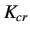. The corresponding period of oscillation is known as 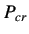. Refer to figure 5.3.
is noted and is called as the critical
gain 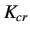. The corresponding period of oscillation is known as 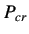. Refer to figure 5.3.
The various P, PI and PID parameters are then calculated with the help of table 5.2.
| 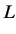 | 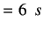 | |
| 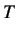 | 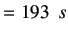 |
For PI
| 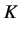 | 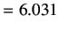 | |
| 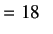 |
For PID
| 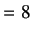 | ||
| 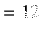 | ||
| 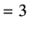 |
rokade 2017-04-23